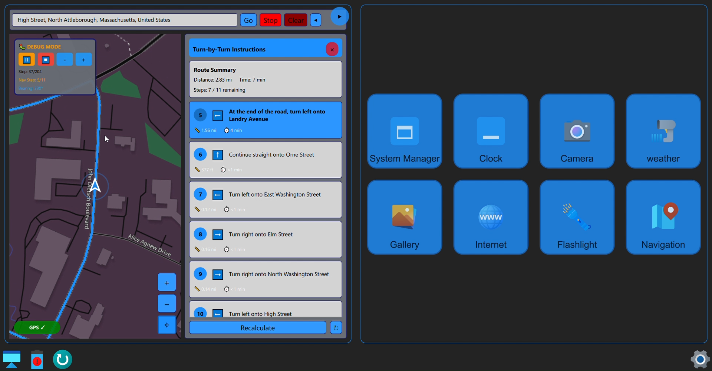

Screenshots
Collection of implemented Control Screens features
Navigation System
Home Screen Widgets

Dock Information Panel

Theme System

Software Development Intern • M3 Control Screens
During my internship at Patrol PC, I contributed to the development, testing, and debugging of the M3 Police Computer Control Screens. I worked with QML and C++ to blend graphical interfaces with backend hardware logic.
Collection of implemented Control Screens features